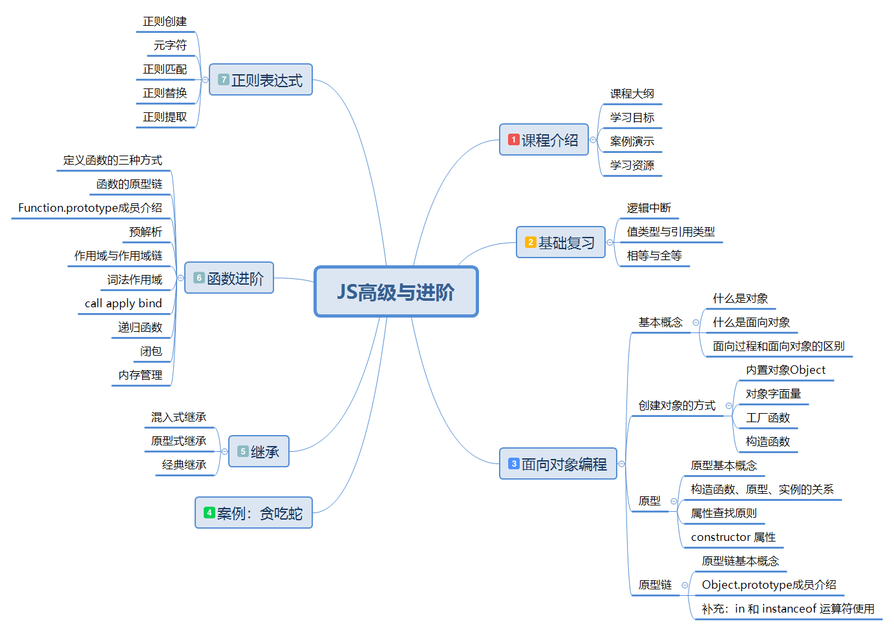
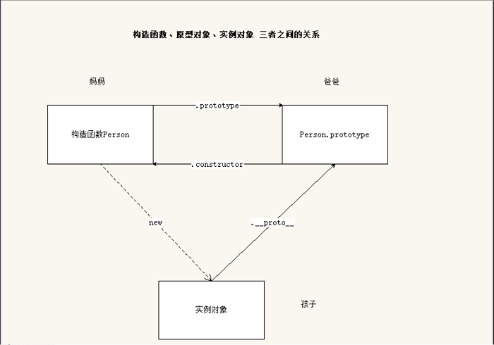

JavaScript 高级
课程大纲

面向对象编程
基本概念
Everything is object （万物皆对象）
对象到底是什么，我们可以从两次层次来理解
(1) 对象是具体事物的抽象
一本书、一辆汽车、一个人都可以是对象，当实物被抽象成对象，实物之间的关系就变成了对象之间的关系，从而就可以模拟现实情况，针对对象进行编程
问： 书是对象吗
(2)对象是无序键值对的集合，其属性可以包含基本值、对象或者函数
每个对象都是基于一个引用类型创建的，这些类型可以是系统内置的原生类型，也可以是开发人员自定义的类型
什么是面向对象？
面向对象编程 —— Object Oriented Programming，简称 OOP ，是一种编程开发思想
在面向对象程序开发思想中，每一个对象都是功能中心，具有明确分工，可以完成接受信息、处理数据、发出信息等任务
因此，面向对象编程具有灵活、代码可复用、高度模块化等特点，容易维护和开发，比起由一系列函数或指令组成的传统的过程式编程（procedural programming），更适合多人合作的大型软件项目
面向对象与面向过程：
- 面向过程就是亲历亲为，事无巨细，有条不紊，面向过程是解决问题的一种思维方式，（执行者的角度）
- 关注点在于解决问题的过程（先xx，然后xx，在xx）
- 面向对象就是找一个对象，让她去做这件事情（指挥者的角度）
- 关注点在找到能解决问题的对象上
- 面向对象不是面向过程的替代，而是面向过程的封装
面向对象的特性：
- 封装性
- 将功能的具体实现，全部封装到对象的内部，外界使用对象时，只需要关注对象提供的方法如何使用，而不需要关心对象的内部具体实现，这就是封装
- 继承性
- 在 js 中，继承的概念很简单，一个对象没有的一些属性和方法，另外一个对象有，拿过来用，就实现了继承
- 注意：在其他语言里面，继承是类与类之间的关系，在 js 中，是对象与对象之间的关系
- [多态性]
- 多态是在强类型的语言中才有的；js 是弱类型语言，所以 js 不支持多态
创建对象的方式
内置构造函数创建
我们可以直接通过 new Object() 创建：
1 | // 在 js 中，对象有动态特性，可以随时的给一个对象增加属性或者删除属性 |
缺点：麻烦，每个属性都需要添加
对象字面量创建
1 | var person = { |
缺点：无法批量生成多个对象，代码冗余
简单改进：工厂函数
我们可以写一个函数，解决代码重复问题
1 | function createPerson (name, age) { |
然后生成实例对象：
1 | var p1 = createPerson('zs', 18) |
缺点：没有解决对象识别的问题，创建出来的对象都是Object类型的
继续改进：自定义构造函数
构造函数是一个函数，用于实例化对象，需要配合 new 操作符使用
1 | function Person (name, age) { |
构造函数的缺点
使用构造函数带来的最大的好处就是创建对象更方便了，但是其本身也存在一个浪费内存的问题：
1 | function Person (name, age) { |
解决方案：
1 | function sayHello() { |
缺点：会暴漏很多的函数，容易造成全局变量污染
术语：
- 实例（实例对象）：通过构造函数创建出来的对象，叫做实例，实例可以有多个
- 实例化：构造函数创建对象的过程
- 成员：对象的属性和方法
原型
原型基本概念
Javascript 规定，每一个函数都有一个 prototype 属性，属性值是一个对象，这个对象就叫做原型（原型对象），这个对象的所有属性和方法，都会被构造函数的实例继承
这也就意味着，我们可以把所有对象实例需要共享的属性和方法直接定义在 prototype 对象上
1 | function Person (name, age) { |
这时所有实例的 sayName() 方法，其实都指向同一个内存地址
__proto__
任意对象都有 __proto__ 属性，这个属性指向了构造函数的 prototype 属性，也就是原型对象
获取原型对象：
- 通过
构造函数.prototype可以获取 - 通过
实例.__proto__可以获取（隐式原型） - 它们指向了同一个对象
构造函数.prototype === 实例.__proto__
注意：__proto__是浏览器的一个隐藏（私有）属性，IE浏览器不支持，不要通过它来修改原型里的内容，如果要修改原型中的内容，使用 构造函数.prototype 去修改
constructor 属性
默认情况下，原型对象中只包含了一个属性：constructor，constructor 属性指向了当前原型对象的构造函数
1 | function Person () {} |
构造函数、实例、原型三者之间的关系
构造函数：构造函数就是一个函数，配合 new 可以新建对象
实例：通过构造函数实例化出来的对象我们把它叫做构造函数的实例。一个构造函数可以有很多实例
原型：每一个构造函数都有一个属性prototype，函数的 prototype 属性值就是原型。通过构造函数创建出来的实例能够直接使用原型上的属性和方法

原型三角关系：
构造函数和原型：配偶关系
- 构造函数（妈妈），通过 prototype 属性访问原型（爸爸）
- 原型通过 constructor 属性访问到构造函数
构造函数 和 实例对象：母子关系
- 构造函数可以创建实例对象
- 实例对象不能直接访问到构造函数
原型 和 实例对象关系：父子关系
- 实例对象可以直接访问到原型上的所有成员
- 实例对象可以间接的访问到构造函数（通过原型上的 constructor 属性）
原型链
原型链概念
任何一个对象，都有原型对象，原型对象本身又是一个对象，所以原型对象也有自己的原型对象，这样形成的链式结构，就是原型链
绘制对象的原型链结构：
1 | var p = new Person() |
总结：Object.prototype 是原型链的尽头，Object.prototype 的原型是 null

属性查找原则
属性搜索（查找）原则： 沿着原型链进行查找
- 首先在当前对象上查找是否有该属性，如果有，直接返回属性值
- 如果没有，去对象的原型上查找，如果有，直接返回属性值
- 如果也没有， 沿着原型链进行查找，直到 Object.prototype ，如果找到了，就返回属性值，如果还没有，返回 undefined
属性修改（设置）原则：
- 只会修改对象自身的属性
- 如果自身没有这个属性，那么就会添加这个属性，并不会修改原型中的属性
1 | function Person (name, age) { |
Object.prototype 成员介绍
任何对象的原型链上都有 Object.prototype，根据属性搜索原则(沿着原型链进行查找)，任何对象都可以访问到 Object.prototype 上的成员
constructor：指向了构造函数 Object
hasOwnProperty
hasOwnProperty() 方法会返回一个布尔值，判断对象自身是否具有该属性
1 | var obj = { |
hasOwnProperty 与 in 的区别
in操作符：判断对象能否访问到该属性（不管这个属性是自己提供的，还是从原型上继承来的），如果可以访问到， 都会返回 truehasOwnProperty：该属性必须是自己提供，才返回 true，否则返回 false
hasOwnProperty 的使用场景：用在for…in 循环中
1 | for (var k in p) { |
isPrototypeOf
isPrototypeOf() 方法用于测试一个对象是否存在于另一个对象的原型链上
1 | // 判断 A 对象是否在 B 对象的原型链上 |
isPropertyOf 与 instanceof 运算符的区别
instanceof 运算符用来测试一个对象的原型链中是否存在一个构造函数的 prototype 属性。作用和isPrototypeOf 类似
语法： 实例对象 instanceof 构造函数
作用：构造函数的 prototype 属性是否在实例对象的原型链上
- A.isPrototypeOf(B) 判断A是否在B的原型链上 A： 是一个原型对象
- B instanceof A 判断A的prototype是否在B的原型链上 A：是一个构造函数
1 | console.log(Array.isPrototypeOf([])) // false |
propertyIsEnumerable
propertyIsEnumerable() 方法返回一个布尔值，表明指定的属性名是否是当前对象可枚举的自身属性
1 | function Person (name) { |
拓展：给对象添加不可遍历的属性 : Object.defineProperty()
1 | // 语法： Object.defineProperty(obj, prop, desc) |
toString/toLocaleString
返回对象的字符串格式
每个内置对象的原型上都有属于自己的 toString 方法
1 | var obj = { |
valueOf
语法： 对象.valueOf()
作用： 返回对象的原始值（简单数据类型），默认的 valueOf 方法（Object.prototype 上的valueOf 方法）只会返回对象自身；日期对象的 valueOf 方法返回的是时间戳，因为 Date 的原型链上有自己的 valueOf 方法，该valueOf 的作用就是返回日期的时间戳
1 | var obj = { |
valueOf 和 toString 的应用
当对象在参与运算和比较的时候，js 内部会自动的调用 valueOf 和 toString 方法
调用规则：
默认先调用 vauleOf， 尝试将对象转成简单数据类型， 如果没有转成简单数据类型， 会继续在调用 toString 方法
如果 valueOf 和 toString 方法都没有转成简单数据类型，会报错
沙箱模式
沙箱其实就是一个独立的环境，这个环境中任何的改变，都不会对外部环境产生影响
函数自调用一样，在自调用函数内部的变量是不会影响到外部的，因此函数自调用模式也叫沙箱模式
1 | (function(window){ |
- 代码写在自调用函数里面，减少全局污染
- 想要在外面使用 fn 函数，可将 fn 暴露到全局
window.fn = fn;将fn函数的地址赋值给了 window上的 fn 属性 - 一般，我们一个js文件只会暴露一个核心的功能（函数、方法）： 目的还是为了减少全局污染
严格模式
- 语法：
'use strict' - 作用：让js引擎以更加严格的模式执行js代码
- 最佳实践：在某个函数内部开启严格模式，而不是在全局环境中开启
- 注意：
- 严格模式只对当前作用域起作用
- 应该在当前作用域最顶端使用
use strict，否则严格模式无效
- 使用严格模式好处：
- 规范
- 提高代码执行效率
1 | // 严格模式应该配合沙箱模式一起使用。 |
严格模式规定
- 变量必须显示声明
- 函数参数不能重名
- 禁止使用八进制
- 不能使用保留字作为变量名称：
implements, interface, let, package, private, protected, public, static, yield - 如果不符合上述规范，会直接报错
继承
继承：子承父业
在 js 中的继承概念非常简单，拿来主义：一个对象自己没有的属性和方法，另一个对象有，拿过来使用，就实现了继承。
继承的目的：让一个对象可以使用另一个对象的属性和方法。
混入式继承（mixin）
把一个对象中的属性和方法拷贝到另一个对象中。
1 | var ls = { |
原型链继承
一个对象可以访问构造函数的原型中的属性和方法，那么如果想要让一个对象增加某些属性和方法，
只需要把这些属性和方法放到原型对象中即可。这样就实现了继承, 称之为原型链继承
- 直接给原型增加属性和方法
- 原型替换（注意：constructor）
- mixin+原型替换
1 | function Person () {} |
Object.create
最初是由道格拉斯丶克罗克福德发布的一篇文章提出的，ECMAScript5 新增了 Object.create() 方法来规范化了这种继承
ES5 中新增了一个方法 Object.create()，方法会使用指定的原型对象及其属性去创建一个新的对象
1 | // 参数：proto 一个对象 |
函数进阶
定义函数的三种方式
函数声明
1 | fn() // 函数声明可以先调用，在声明 |
函数表达式
1 | var fn = function () { |
构造函数 Function
1 | // 函数也是对象，可以使用 Function 构造函数 new 出来 |
【案例：代码实时预览效果.html】
eval 函数–了解
eval 可以和 new Function 一样，执行字符串代码
注意：eval 函数的功能非常的强大，但是实际使用的情况并不多。
1 | eval('var num = 10; console.log(num)') // 10 |
- eval 形式的代码难以阅读
- eval 形式的代码无法打断点，因为本质还是还是一个字符串
- 在浏览器端执行任意的 JavaScript 会带来潜在的安全风险，恶意的 JavaScript 代码可能会破坏应用，特别是在用它执行用户输入数据的情况下。可能会有恶意用户输入威胁你的站点或应用程序安全的代码（即所谓的代码注入）
推荐了解下xss攻击
函数的四种调用模式
分析 this 的指向问题
- 任何函数都有属于自己的 this
- this 是动态的，this 在函数声明的时候是确定不了的，只有当函数被调用了才能够确定 this 的指向，this 的指向和函数在哪被调用没有关系
分析 this 的问题的思路：
- this 是属于哪个函数
- 这个函数是何种调用模式
1 | 函数：当一个函数不是一个对象的属性时，我们称之为函数 |
函数调用模式
如果一个函数不是一个对象的属性时，就是被当做一个函数来进行调用的。此时 this 指向了 window
1 | // 函数名() 的调用方式 |
方法调用模式
当一个函数被保存为对象的一个属性时，我们称之为一个方法。当一个方法被调用时，this 被绑定到当前对象
1 | // 通过点语法或者中括号语法来访问方法，都是属于方法调用模式 |
构造函数调用模式
如果函数是通过 new 关键字进行调用的，此时 this 被绑定到创建出来的新对象上
1 | function Person () { |
总结：分析 this 的问题，主要就是区分函数的调用模式，看函数是怎么被调用的
1 | // 分析思路：1. 看 this 是哪个函数的 2. 看这个函数是怎么调用的，处于什么调用模式 |
方法借用模式
上下文调用模式也叫方法借用模式，分为 apply，call ，bind
使用方法：
函数.call()或者函数.apply()
任何函数都可以调用 apply，call ，bind 这三个方法
call 方法
call 方法可以调用一个函数，并且可以指定这个函数的 this 指向
1 | // call 方法也可以和 () 一样，进行函数调用 |
伪数组与数组
伪数组也叫类数组
- 伪数组其实就是一个对象，但是跟数组一样，伪数组也会有
length属性，也有0, 1, 2, 3等属性 - 伪数组并没有数组的方法，不能使用
push/pop等方法 - 伪数组可以跟数组一样进行遍历，通过下标操作
- 常见的伪数组：
arguments、document.getElementsByTagName的返回值、jQuery对象
1 | var obj = { |
- 伪数组借用数组的方法
1 | // 给 obj 添加一项 3: 'zl' |
- 将伪数组转换成真数组
1 | var arr = Array.prototype.slice.call(obj) |
apply 方法
1 | apply 的语法： |
apply()方法的作用和call()方法类似，只有一个区别，就是apply()方法接受的是一个包含多个参数的数组。而call()方法接受的是若干个参数的列表
1 | // 1. apply 能够调用函数 |
call 和 apply 的使用场景：
- 如果参数比较少，使用 call 会更加简洁
- 如果参数存放在数组中，此时需要使用 apply
课后练习：
1 | 求数组的最大值和最小值 |
bind 方法
*bind() *方法创建一个新的函数、可以绑定新的函数的this指向
1 | // 返回值：新的函数(不会被调用) |
几种特殊的 this 指向
- 定时器中的 this 指向了window，因为定时器的 function 最终是由 window 来调用的
- 事件中的 this 指向的是当前的元素，在事件触发的时候，浏览器让当前元素调用了 function
函数也是对象
函数是由 new Function 创建出来的，因此函数也是一个对象，
所有的函数都是 new Function 的实例
函数的原型链结构
1 | // 内部：var Person = new Function() |

Function.prototype 成员
- arguments：获取函数的实参，已经被废弃了，现在推荐的做法是使用函数内部可用的
arguments对象来访问函数的实参- （废弃的意思：已经从 Web 标准中删除，虽然一些浏览器目前仍然支持它，但也许会在未来的某个时间停止支持，请尽量不要使用该特性）
- length：获取形参的长度
- name：获取函数的名字，此属性不允许修改
- caller: 用于获取当前函数是在哪个函数中调用的，已经被废弃了
- constructor：指向当前构造函数，Function
- call：调用函数，重新指定 this
- apply：调用函数，重新指定 this
- bind：重新指向 this，返回一个新的函数，不调用
- toString : 得到函数的字符串格式
案例【封装getType函数（获取数据类型）】
1 | function getType (obj) { |
完整版原型链
绘制完整版原型链的目的是辅助大家理解 js 中对象的继承关系

总结：
- 所有函数都是 new Function 创建出来的，因此
所有函数.__proto__都是Function.prototype - 所有对象都是 new Object 创建出来的，因此
所有对象.__proto__都是Object.prototype
预解析与作用域
预解析
预解析：预先解析
js执行代码分为两个过程：
- 预解析过程（变量与函数提升）
- 代码一行一行执行
预解析过程：JavaScript解析器在执行代码前，会把所有变量的声明和函数的声明提升到当前作用域的顶部。例如var a = 11其实会分为var a 和a = 11两部分，其中var a;会被提升。
预解析规则：
- 函数优先，先提升 function，后提升 var
- 遇到重名的 var 会被忽略
- 遇到重名的 function 会被覆盖
- 思考以下代码的结果
1 | // 1. |
推荐：不要在一个作用域内重复的声明相同的变量和函数
作用域
作用域：变量起作用的区域，也就是说：变量定义后，可以在哪个范围内使用该变量
1 | var num = 11 // 全局变量 |
编程语言中，作用域规则分为两种：
- 词法作用域
- 块级作用域 — js没有块级作用域
全局变量：在函数外使用 var 声明的变量， 在任何地方都可以访问到
局部变量：在函数内使用 var 声明的变量，只能在函数内部访问到
自由变量：对于一个函数来说，函数内部没有声明该变量，但在函数内部有访问该变量。对于这个函数来说， 该变量就是一个自由变量。
在 js 里只有函数可以形成作用域，所有 词法作用域 又叫函数作用域。
因为函数能够形成作用域，所以函数内部声明的变量函数外部无法访问
函数作用域是在函数定义的时候作用域就确定下来了，和函数在哪调用无关
1 | var num = 123 |
作用域链
作用域链：只要是函数，就会形成一个作用域，如果这个函数被嵌套在其他函数中，那么外部函数也有自己的作用域，这个一直往上到全局环境，就形成了一个作用域链。
变量的搜索原则：
- 从当前作用域开始查找是否声明了该变量，如果存在，那么就直接返回这个变量的值。
- 如果不存在，就会往上一层作用域查询，如果存在，就返回。
- 如果不存在，一直查询到全局作用域，如果存在，就返回。如果在全局中也没有找到该变量会报错
作用域链练习
1 | // 1. |
递归函数
递归函数：函数内部直接或者间接的调用自己
递归的要求：
- 自己调用自己（直接或者间接）
- 要有结束条件（出口）
递归函数主要是化归思想，将一个复杂的问题简单化，主要用于解决数学中的一些问题居多。
- 把要解决的问题，归结为已经解决的问题上。
- 一定要考虑什么时候结束让函数结束，也就是停止递归（一定要有已知条件）
练习：
- 计算1-100之间所有数的和
- 计算斐波那契数列
实现缓存
缓存（cache）：数据的缓冲区，当要读取数据时，先从缓冲中获取数据，如果找到了，直接获取，如果找不到，重新去请求数据
计算斐波那契数列，会有很大的性能问题，因为重复的计算了很多次，因此我们可以使用缓存来解决这个性能问题。
初级优化：
使用缓存的基本步骤：
- 如果要获取数据，先查询缓存，如果有就直接使用
- 如果没有，就进行计算，并且将计算后的结果放到缓存中，方便下次使用。
1 | // 缓存 |
缺点：既然使用缓存，就需要保证缓存的数据的安全，不能被别人修改，因此，需要使用闭包来实现缓存的私有化。
闭包
闭包的基本概念
闭包（closure）是 JavaScript 语言的一个难点，也是 JavaScript 的一个特色，很多高级的应用都要依靠闭包来实现
闭包是函数和声明该函数的词法环境的组合
在JavaScript中，在函数中可以（嵌套）定义另一个函数时，如果内部的函数引用了外部的函数的变量，产生闭包
*闭包中包含了内部函数的代码，以及所需外部函数中的变量的引用 *
产生闭包的条件：有两个函数，是嵌套关系，内部函数引用了外部函数的变量，这样就会形成闭包
闭包的作用：
- 私有变量，保护数据安全
- 持久化维持数据
1 | // 闭包的基本模型 |
闭包的应用
计数器
需求：统计一个函数的调用次数
1 | var count = 0 |
使用闭包解决这个问题！！！！
1 | function outer () { |
【案例：银行存钱取钱】
缓存的私有化
缓存（cache）：数据的缓冲区，当要读取数据时，先从缓冲中获取数据，如果找到了，直接获取，如果找不到，重新去请求数据。
计算斐波那契数列，会有很大的性能问题，因为重复的计算了很多次，因此我们可以使用缓存来解决这个性能问题。
缺点：既然使用缓存，就需要保证缓存的数据的安全，不能被别人修改，因此，需要使用闭包来实现缓存的私有化。
1 | function outer () { |
闭包存在的问题
正常情况下：函数在调用的时候，去开辟一块内存空间用来执行内部的代码，当函数调用结束的时候，要销毁开辟的空间，节省内存
闭包占用的内存是不会被释放的，因此，如果滥用闭包，会造成内存泄漏的问题。闭包很强大，但是只有在必须使用闭包的时候才使用
js的垃圾回收机制(了解)
- 内存：计算机中所有程序的运行都是在
内存中进行的，因此内存的性能对计算机的影响非常大，运行程序需要消耗内存，当程序结束时，内存会得到释放。 - javascript 分配内存：当我们定义变量，javascript 自动分配内存存储数据。无论是值类型或者是引用类型，都需要存储在内存中。
- 垃圾回收：当代码执行结束，分配的内存已经不需要了，这时候需要将内存进行回收，在 javascript语言中，
垃圾回收机器会帮我们回收不再需要使用的内存。
引用记数法清除
引用记数垃圾收集：如果没有引用指向某个对象（或者是函数作用域），那么这个对象或者函数作用域就会被垃圾回收机制回收。
1 | var o = { |
引用计数法无法解决循环引用导致的内存泄露
1 | function fn () { |
标记清除法清除
使用引用计数法进行垃圾回收的时候，会出现循环引用导致内存泄漏的问题。因此现代的浏览器都采用标记清除法来进行垃圾回收。
这个算法假定设置一个叫做根（root）的对象（在 Javascript 里，根是全局对象 Window）。定期的，垃圾回收器将从根开始，找所有从根开始引用的对象，然后找这些对象引用的对象……从根开始，垃圾回收器将找到所有可以获得的对象和所有不能获得的对象。
从2012年起，所有现代浏览器都使用了标记-清除垃圾回收算法。
闭包占用内存释放
当闭包的功能不在需要使用了，将这个变量指向 null， 这样闭包占用的内存就可以被回收掉了
1 | function outer () { |
正则表达式
正则表达式(regular expression)描述了一种字符串匹配的模式（pattern），可以用来检查一个串是否含有某种子串（数据验证）、将匹配的子串替换（数据删除或替换）或者从某个串中取出符合某个条件的子串等（数据提取）。
创建正则表达式
- 构造函数的方式
1 | // RegExp （regular expression） |
- 正则字面量
1 | var reg = /a/ |
正则有 test 方法，作用是测试字符串是否符合正则表达式的规律，如果符合， 返回true
1 | console.log(reg.test('abc')) // true |
元字符
正则表达式由一些普通字符和元字符组成，普通字符包括大小写字母、数字等，而元字符则具有特殊的含义。
常见元字符
\d匹配一个数字字符。等价于[0-9]\D匹配一个非数字字符。等价于[^0-9]\w匹配包括下划线的任何单词字符。等价于[A-Za-z0-9_]\W匹配任何非单词字符。等价于[^A-Za-z0-9_]\s匹配任何空白字符，包括空格、制表符、换页符等等。等价于[\f\n\r\t\v]\S匹配任何非空白字符。等价于[^\f\n\r\t\v]\将下一个字符标记为或特殊字符、或原义字符、或向后引用、或八进制转义符。例如，n匹配字符n。\n匹配换行符。\\匹配\，\(则匹配(。.匹配除换行符\n之外的任何单字符。要匹配包括 ‘\n’ 在内的任何字符，可用(.|\n)
|指明两项之间的一个选择。，优先级最低，| 的左右都是单独的整体()优先级最高，标记一个子表达式的开始和结束位置。子表达式可以获取供以后使用。使用 $0…$9 属性。要匹配这些字符，请使用\(和\)。每个()就是一个子匹配 ‘\1’和’$1’用来指定第一个子匹配
1 | /f|boot/; // 匹配 `f` 和 `boot` |
空白字符
\f匹配一个换页符\n匹配一个换行符\r匹配一个回车符\t匹配一个制表符\v匹配一个垂直制表符
字符类的元字符
[]在正则表达式中表示 单个 字符的位置，[] 里面写这个位置可以出现的字符。
1 | /[abc]/; // 匹配 a,b,c 任意一个字符 |
[^]在中扩号中的^表示非的意思。
1 | // ^ 在方括号表达式开头中使用，此时它表示不接受该字符集合 |
[a-z][1-9]表示范围
1 | /[a-z]/; // 小写字母 |
边界类元字符
我们前面学习的正则只要有满足的条件的就会返回true，并不能做到精确的匹配。
^匹配输入字符串的开始位置$匹配输入字符串的结尾位置
1 | /^chuan/; // 以chuan开头 |
以后表单校验要精确匹配
\b匹配一个字边界，即字与空格间的位置。如果它位于要匹配的字符串的开始，它在单词的开始处查找匹配项。如果它位于字符串的结尾，它在单词的结尾处查找匹配项。- Chapter：
/\bCha/: 匹配Chapter的开头三个字符/ter\b/: 匹配Chapter的结尾三个字符
- Chapter：
\B表示非单词边界。位置并不重要，因为匹配不关心究竟是单词的开头还是结尾。
下面的表达式匹配 Chapter 中的字符串 apt，但不匹配 aptitude 中的字符串 apt/\Bapt/
量词类元字符
量词用来控制出现的次数，一般来说量词和边界会一起使用
*匹配前面的子表达式零次或多次，等价于{0,}+匹配前面的子表达式一次或多次，等价于{1,}?匹配前面的子表达式零次或一次，等价于{0,1}。当该字符紧跟在任何一个其他限制符 (*,+,?,{n},{n,},{n,m})后面时，匹配模式是非贪婪的。非贪婪模式尽可能少的匹配所搜索的字符串，而默认的贪婪模式则尽可能多的匹配所搜索的字符串{n}n 是一个非负整数。匹配确定的n次。{n,}n 是一个非负整数。至少匹配n次。{n,m}m和n均为非负整数，其中n<=m。最少匹配n次且最多匹配m次。
1 | // {} 就近修饰单个字符 |
其他字符
g全局标记，指定将该表达式应用到输入字符串中能够查找到的尽可能多的匹配i标记指定不区分大小写。表达式的结尾处
优先级
从高到低的优先级顺序：
\转义符(),(?:),(?=),[]圆括号和方括号*,+,?,{n},{n,},{n,m}限定符^,$,\任何元字符、任何字符定位点和序列（即：位置和顺序）|替换，”或”操作
字符具有高于替换运算符的优先级，使得”m|food”匹配”m”或”food”。若要匹配”mood”或”food”，请使用括号创建子表达式，从而产生”(m|f)ood”。
正则的使用
字符串使用正则
replace()
1 | var str = " 123AD asadf asadfasf adf "; |
match()==> 匹配， 匹配符合正则表达式的字符
1 | var str2 = "zs的手机号是18938383838, ls的手机号13989907890， ww的手机号是13848962389，zl的手机号是18970890908"; |
正则的方法
test() ==> 测试字符串是否符合正则表达式的规律，符合，就返回true
exec() ==> 提取，提取字符串中符合正则表达式的字符，需要用括号分组， 如果没有进行分组，返回的是符合整个正则表达式的字符
1 | var str = "今天是2018-10-16，我这里的需求是提取出年月日"; |
实例
[xyz]字符集合。匹配所包含的任意一个字符。例如， ‘[abc]’ 可以匹配 “plain” 中的 ‘a’。[^xyz]负值字符集合。匹配未包含的任意字符。例如， ‘[^abc]’ 可以匹配 “plain” 中的’p’、’l’、’i’、’n’。[a-z]匹配所有小写字母[-a-z]或[a-z-]匹配所有小写字母和-[A-Za-z0-9]匹配任何大写字母小写字母和数字\b([a-z]+)\1\b/gi一个单词连续出现的位置。- 将通用资源指示符 (URI) 分解为其组件
1 | var str = "https://www.baidu.com:80/index.html"; |